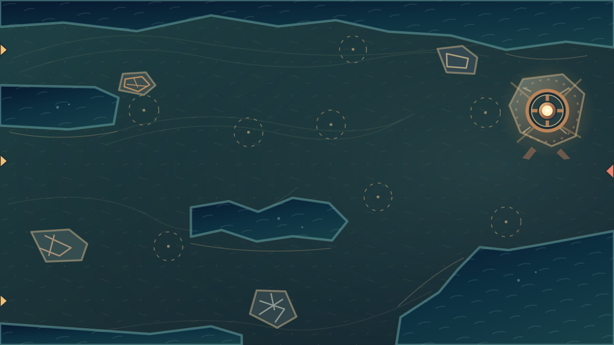

Север: дальний обход
Центр: быстрый прорыв
Юг: приливная дуга
Общий рубеж
3 входа
308 px общего пути
8 + 3 позиций суша / вода
Диагностический просмотр геометрии. Цветные дорожки и обозначения площадок принадлежат только этой странице: основной фон содержит декорации и не рисует поверх игровых сущностей. Проходимость требует отдельного replay на боевом движке.